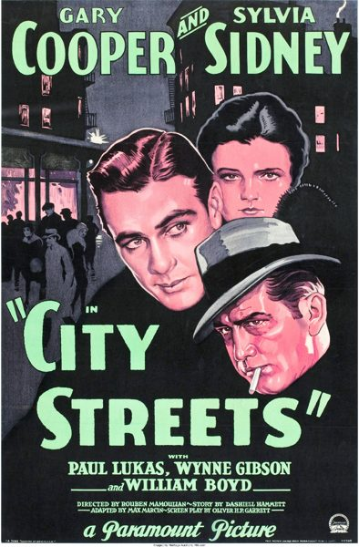

City Streets

Starring: Gary Cooper, Sylvia Sidney, Paul Lukas
Director: Rouben Mamoulian
Producer: E. Lloyd Sheldon
City Streets is a 1931 American Pre-Code romantic melodrama directed by Rouben Mamoulian from a story by Dashiell Hammett and stars Gary Cooper, Sylvia Sidney and Paul Lukas. The story concerns a racketeer's daughter, Nan, who is in love with a shooting gallery showman, who is known as The Kid.
Trivia
- Selected for the National Board of Review: Top Ten Films.
- Crime writer Dashiell Hammett, under contract to Paramount, wrote a short plot outline entitled "After School" about a girl of 16 who collaborates in crime with her bootlegger stepfather and is sent briefly to reform school.
- By late 1930 a screenplay was completed, the protagonists had been re-characterized as young adults.
- Mamoulian, to evade studio artistic control, refrained from making any explicit alterations to the Garrett/Marin scenario in advance of filming.
Previous Showings
6 Runs • 3 Festivals
Original Billings: 2 runs (May 3, 1931 - October 14, 1938)
Original Run: May 3, 1931 (Sunday - Tuesday)
All runs on record (6):
- May 3, 1931 (Sunday - Tuesday)Gary Cooper, Sylvia Sidney
- October 14, 1938 (Friday - Saturday)Leo Carrillo, Edith Fellows
- February 8, 1988w/ Applause
- July 14 - 16, 2010Summer 2010w/ Desire
- March 25 - 26, 2015Cary Grant, plus Ernst Lubitsch and Rouben Mamoulianw/ Monte Carlo
- March 27 - 28, 2025Lubitsch, Mamoulian, Sternberg Three Great Directorsw/ Applause